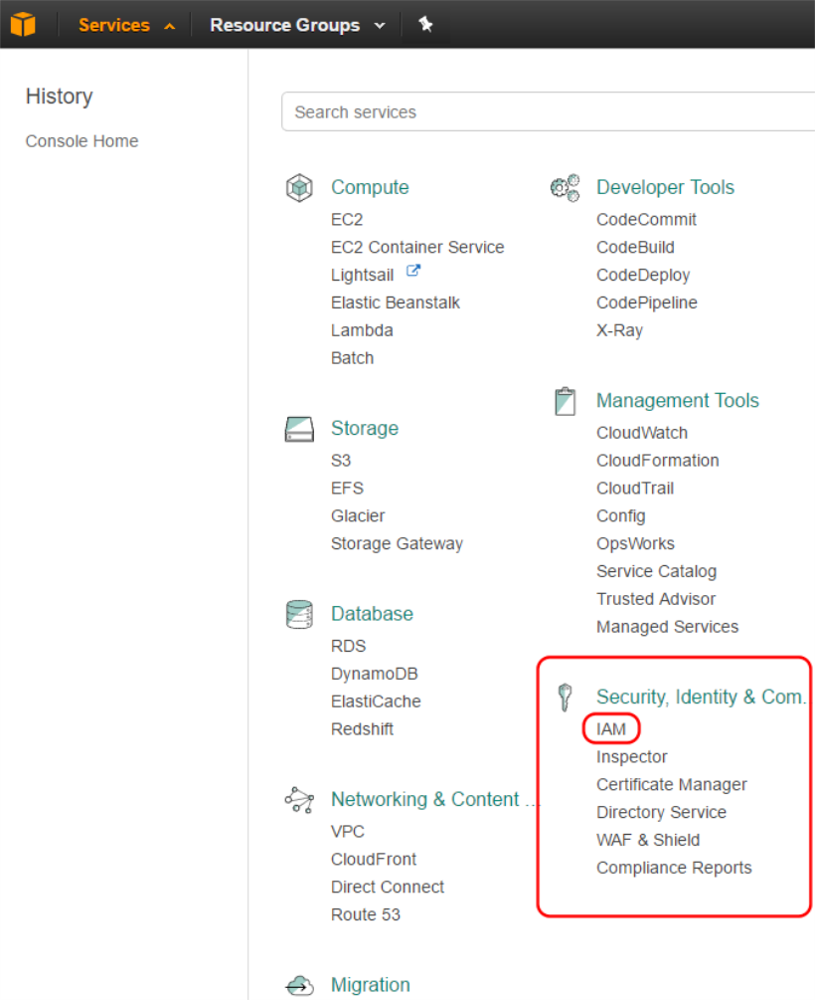
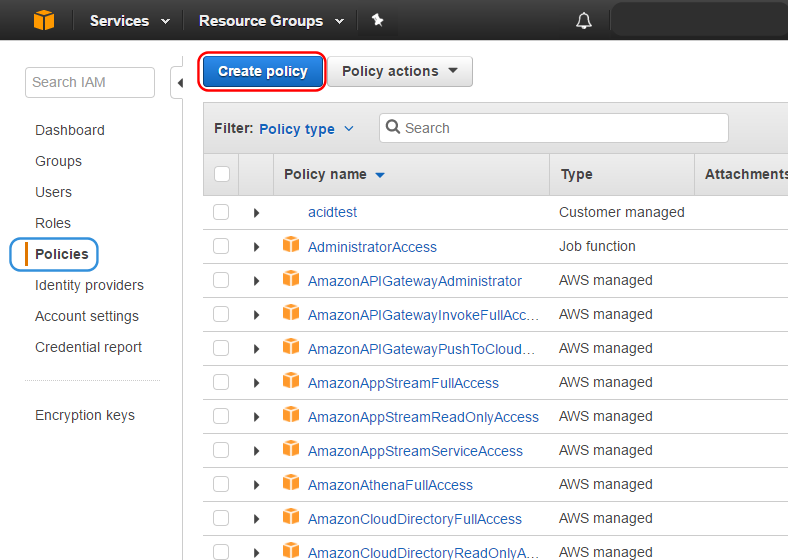
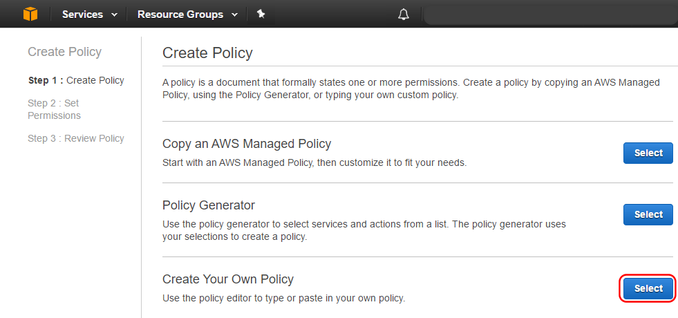
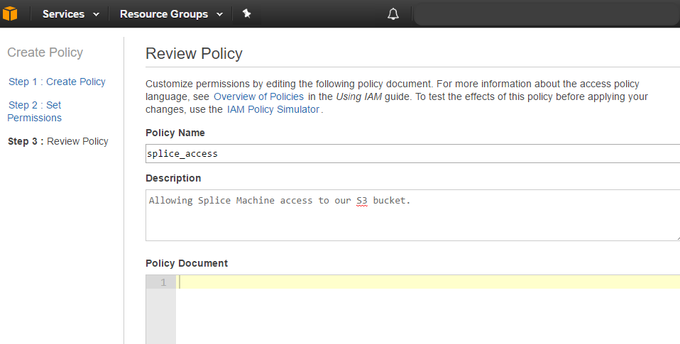
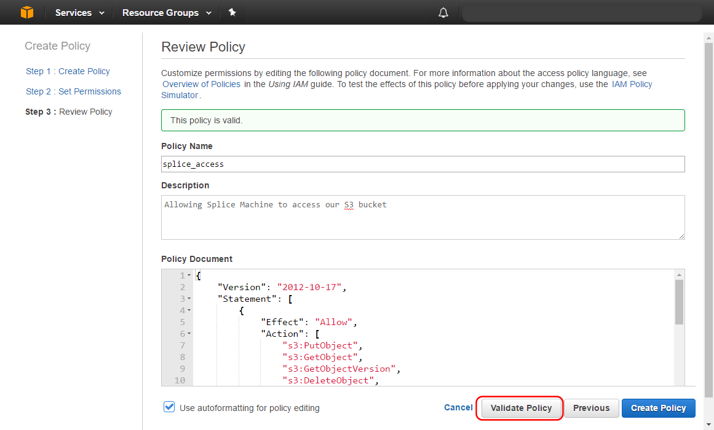
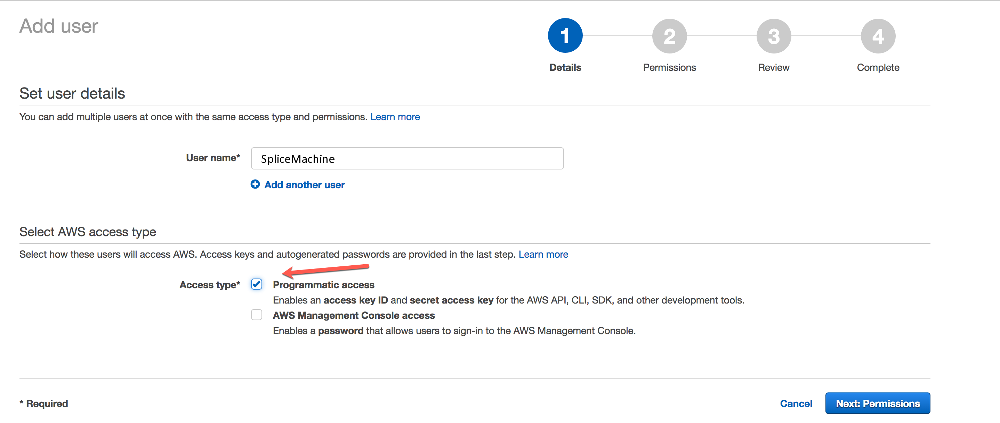
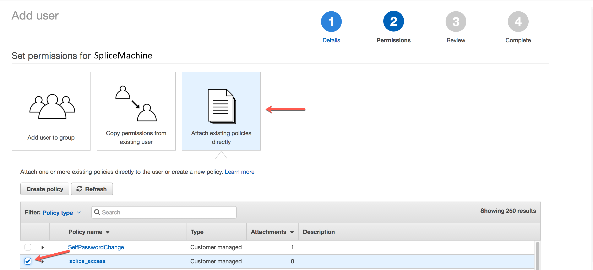
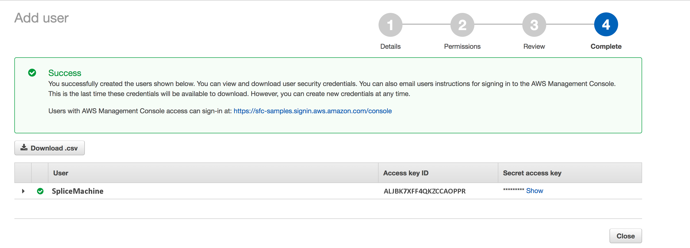

Configuring an S3 Bucket for Splice Machine Access
Splice Machine can access S3 buckets, making it easy for you to store and manage your data on AWS. To do so, you need to configure your AWS controls to allow that access. This topic walks you through the required steps.
You must have administrative access to AWS to configure your S3 buckets for Splice Machine.
Configure S3 Bucket Access
You can follow these steps to configure access to your S3 bucket(s) for Splice Machine; when you’re done, you will have:
- created an IAM policy for an S3 bucket
- created an IAM user
- generated access credential for that user
- attached the security policy to that user
-
Log in to the AWS Database Console
You must have administrative access to configure S3 bucket access.
-
Select Services at the top of the dashboard
-
Access the IAM (Identify and Access Management) service:
Select IAM in the Security, Identity & Compliance section:

-
Create a new policy:
-
Select Policies from the IAM screen, then select Create Policy:

-
Select Create Your Own Policy to enter your own policy:

-
In the Review Policy section, which should be pre-selected, specify a name for this policy (we call it splice_access):

-
Paste the following JSON object specification into the Policy Document field and then modify the highlighted values to specify your bucket name and folder path.
{ "Version": "2017-04-17", "Statement": [ { "Effect": "Allow", "Action": [ "s3:PutObject", "s3:GetObject", "s3:GetObjectVersion", "s3:DeleteObject", "s3:DeleteObjectVersion" ], "Resource": "arn:aws:s3:::<bucket_name>/<prefix>/*" }, { "Effect": "Allow", "Action": "s3:ListBucket", "Resource": "arn:aws:s3:::<bucket_name>", "Condition": { "StringLike": { "s3:prefix": [ "<prefix>/*" ] } } }, { "Effect": "Allow", "Action": "s3:GetAccelerateConfiguration", "Resource": "arn:aws:s3:::<bucket_name>" } ] } -
Click Validate Policy to verify that your policy settings are valid.

-
Click Create Policy to create and save the policy.
-
-
Add Splice Machine as a user:
After you create the policy:
-
Select Users from the left-hand navigation pane.
-
Click Add User.
-
Enter a User name (we’ve used SpliceMachine) and select Programmatic access as the access type:

-
Click Attach existing policies directly.
-
Select the policy you just created and click Next:

-
Review your settings, then click Create User.
-
-
Save your access credentials
You must write down your Access key ID and secret access key; you will be unable to recover the secret access key.

Splice Machine strongly recommends that you click the Download .csv button and save your credentials in a file for future reference. Once you close this screen, you’ll be unable to display your secret access key.